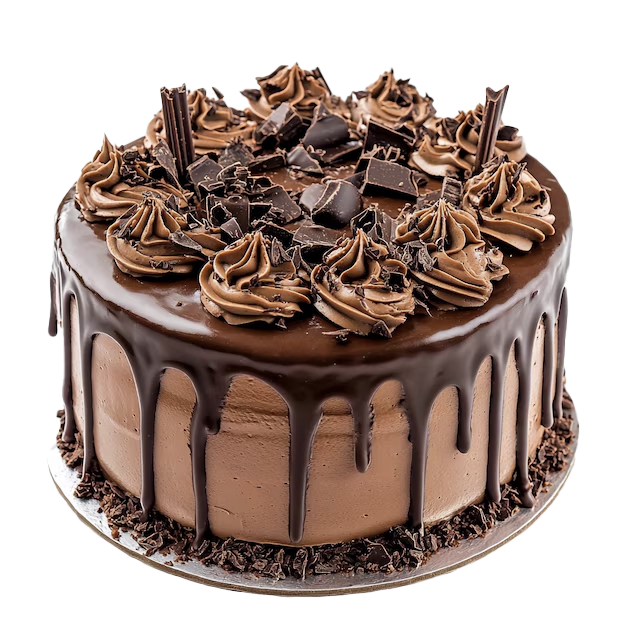
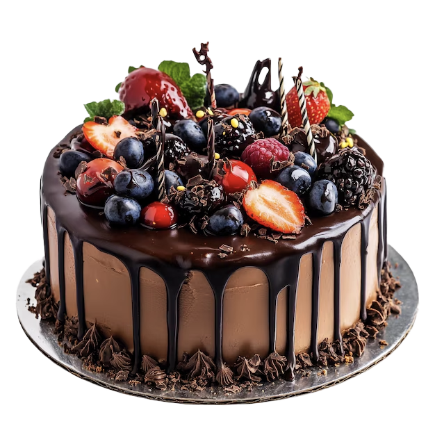
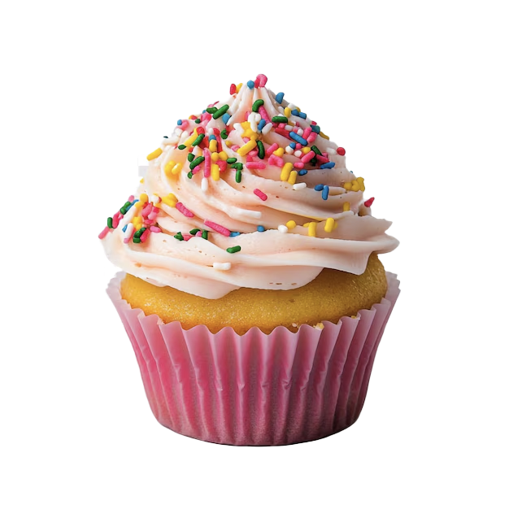

¡Bienvenidos!
Tu lugar favorito para descubrir recetas de dulces, pastafrolas, alfajores, tortas y muchas delicias más.
Explorar RecetasTu lugar favorito para descubrir recetas de dulces, pastafrolas, alfajores, tortas y muchas delicias más.
Explorar Recetas
Delicioso pastel elaborado con suave bizcocho de chocolate y una textura esponjosa que se combina perfectamente con un cremoso relleno y cobertura de cacao. Ideal para los amantes del chocolate.

Elegante y suave pastel de color rojo intenso, con un delicado sabor a vainilla y cacao, acompañado de una cremosa cobertura de queso crema que lo hace irresistible.

Exquisita combinación de intenso chocolate con frescas bayas que aportan un toque dulce y ligeramente ácido, creando un equilibrio perfecto de sabores.

Pequeños y deliciosos pastelitos individuales, decorados con cremoso frosting y disponibles en distintos sabores, perfectos para cualquier ocasión especial.